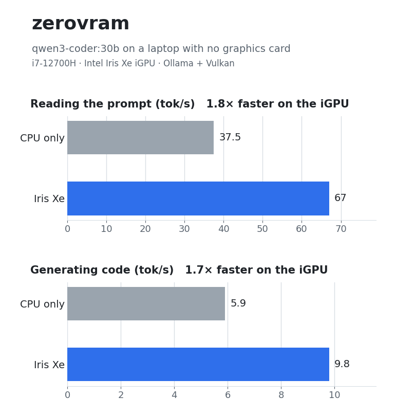

Zero VRAM
Captain's log, stardate 2026.317.
The question tonight was simple. Can a laptop with no graphics card run a real coding agent, privately, with nothing leaving the machine? The common answer is no: buy an Nvidia card. I wanted to measure it before I believed it.
The chip that was sitting idle
My laptop has an Intel Iris Xe, a graphics chip built into the processor. It has no memory of its own. It borrows system RAM. I ran a model through Ollama and checked where it ran: 100% CPU. The GPU was doing nothing.
The server log explained why, in one line: dropping integrated GPU; to enable, set OLLAMA_IGPU_ENABLE=1. The tool saw the chip and chose to ignore it. Two settings later, the same 30B coding model ran entirely on the iGPU.

- Reading the prompt: 37.5 → 67 tokens/s (1.8×)
- Generating code: 5.9 → 9.8 tokens/s (1.7×)
Why it stops there
Before trusting those numbers I wrote my own GPU kernels in OpenCL and measured memory speed directly. The CPU with all 20 threads topped out near 30 GB/s, and so did the GPU. Generating text is mostly reading the model's weights from memory, over and over. Two engines sharing one narrow road do not drive faster than one. A discrete card reads its own memory at about 30 times that speed, and that gap is the real price of a graphics card.
The model helps too. It is a mixture of experts: 30 billion parameters in total, but only about 3 billion are used for each token. That is why a 30B model fits on a laptop at all.
Building the agent
Existing agents send twenty thousand tokens of instructions with every request. At 67 tokens/s, that is five minutes before the first word. So I wrote a small one, tinyagent, with a system prompt of about 300 tokens. It lists folders, searches and reads files without being told where to look, and it asks before it writes anything or runs a command. Along the way, the model sometimes wrote its tool calls as plain text instead of real calls. The agent now spots that and runs them anyway.
Captain's log, supplemental. The setup script, the benchmark and the agent are open source as zerovram. It is not a frontier model. It is a private coding assistant on hardware people already own, and the lesson I keep relearning: measure the bottleneck before you buy your way past it.
End log.